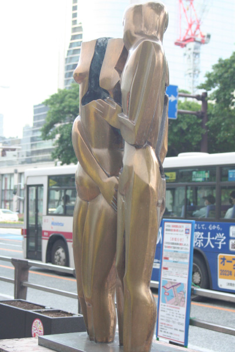
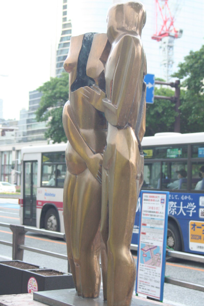
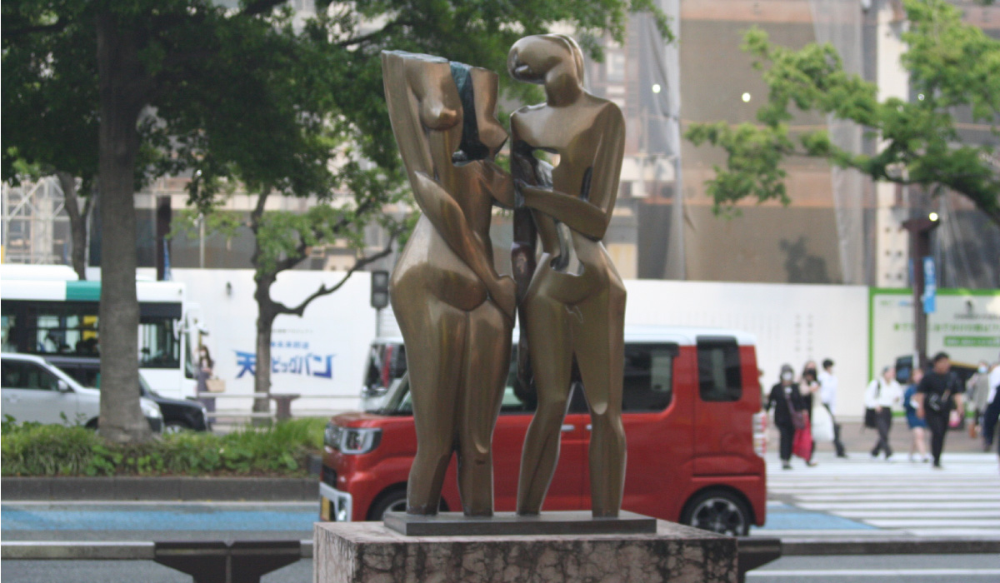
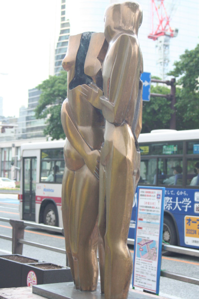

オシップ・ザッキン

福岡PARCOの前の歩道、日中は人通りが絶えない歩道にこの作品は設置されている。
作者のオシップ・ザッキンは1890年、ロシア帝国に生まれた。現在のベラルーシの出身。
1909年にフランス・パリに渡り、エコール・ド・パリ（パリ派）の芸術家として活躍した。
パブロ・ピカソやアメデオ・モディリアーニ、藤田嗣治たちとの交流がある。
キュビスムの彫刻家として知られるが黒人彫刻の影響を受け、アフリカ的手法を
取り入れながら再構成していく素朴な作品も多い。1940年から戦災を逃れてアメリカへと渡るが
戦後すぐ帰国し、没するまでパリを拠点に精力的に活動した。